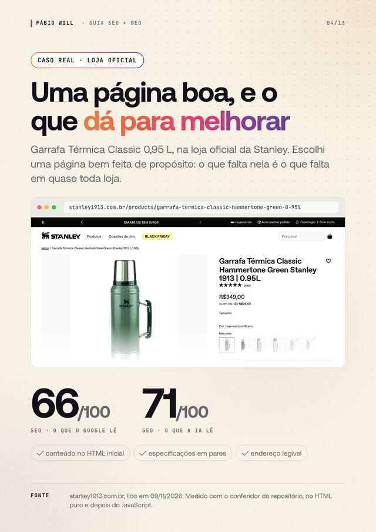
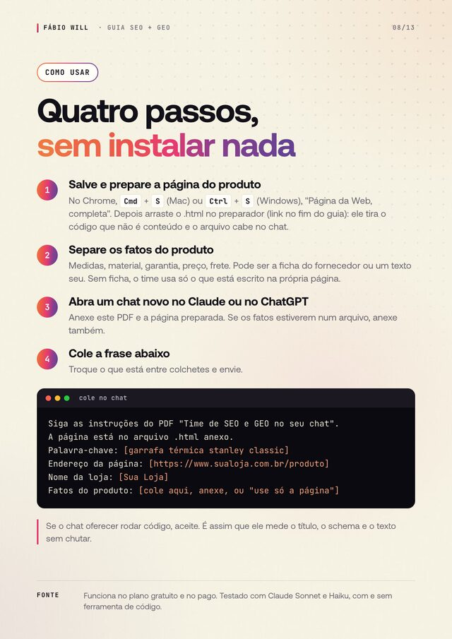
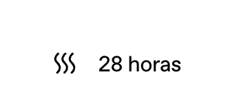
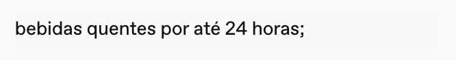
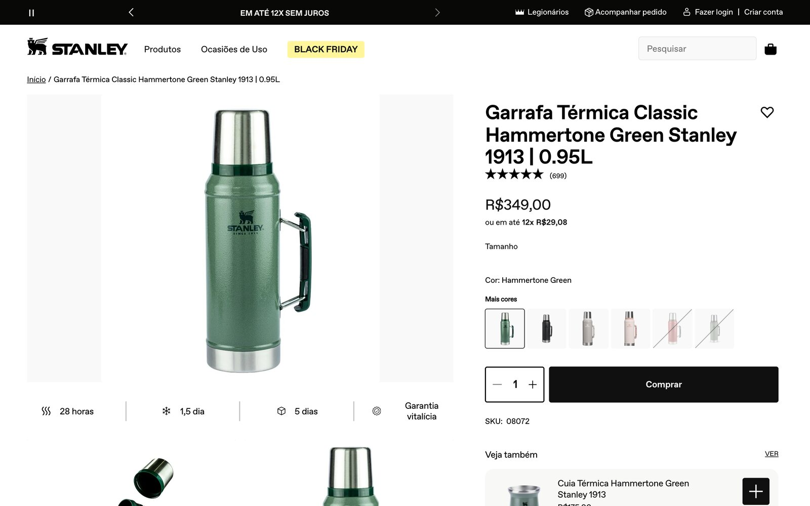
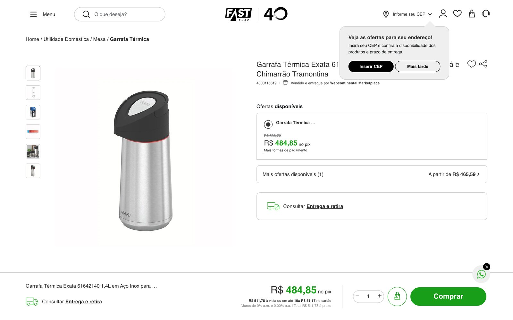
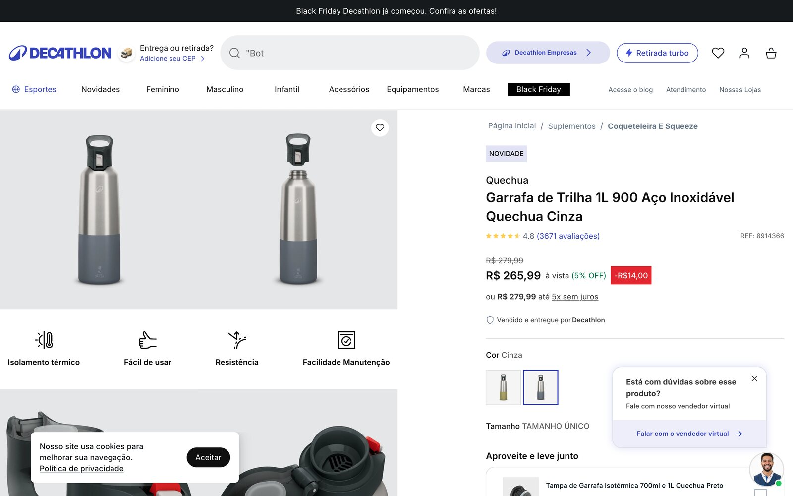
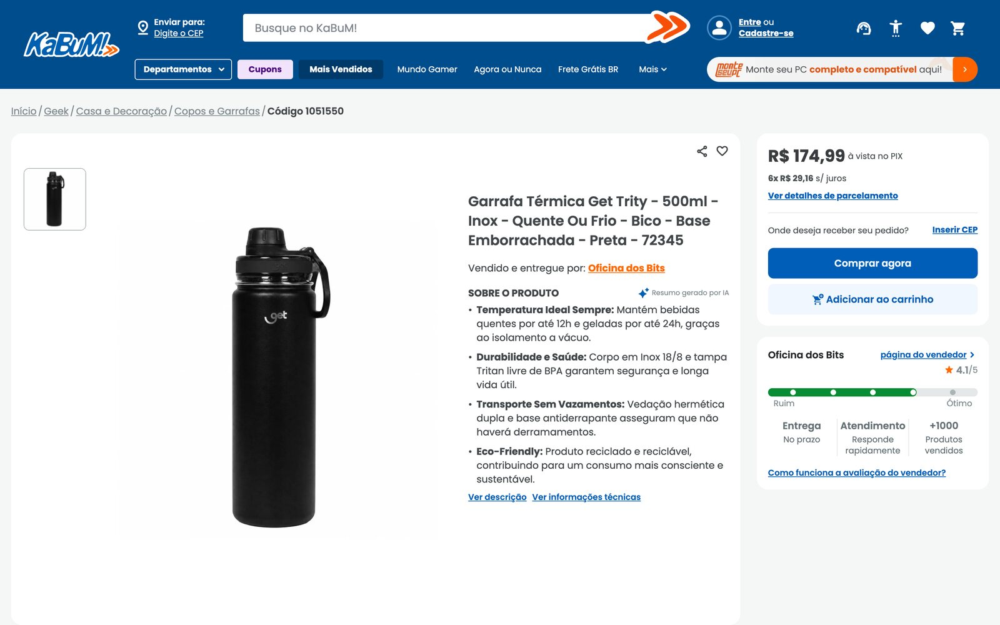

O ChatGPT recomenda a sua loja ou a do concorrente?
Este guia transforma o Claude ou o ChatGPT num time de SEO e GEO: ele mede a página do seu produto, reescreve sem inventar nada e confere cada fato antes de você aprovar.
PDF · 1,7 MB · sem cadastro · testado em 4 lojas reais


Stanley, depoisSEO 66 → 94
Caso real · loja oficial da Stanley
A mesma página diz 28 horas e 24 horas
Quanto tempo a garrafa mantém quente? Quem lê a página passa batido. Um assistente de IA que precisa responder não sabe qual número repetir, e página que se contradiz perde a vez para quem é claro.
No topo da página
quente por 28 horas

print da página oficial, 09/11/2026Nos detalhes, mais abaixo
bebidas quentes por até 24 horas

print da página oficial, 09/11/2026
Depois do time, na mesma página
SEO
66 →94
GEO
71 →100
Simulação educativa feita a partir da página pública; a página oficial não mudou. O time não escolheu entre 28 e 24 horas: deixou a pergunta para a marca. Nenhum dado foi inventado.
Quatro lojas reais
Quatro plataformas, o mesmo padrão

Stanley
Shopify · 28 h e 24 h na mesma página
66SEO

Fast Shop
VTEX · ficha técnica num parágrafo só
78SEO

Decathlon
VTEX · nota visível, fora do schema
84SEO

KaBuM
título de promoção, não do produto
64SEO
4 de 4sem pergunta de comprador respondida na página
Salve a página do produtoNo Chrome: Cmd + S (Mac) ou Ctrl + S (Windows), "Página da Web, completa".
Passe pelo preparadorO preparador deixa o arquivo umas dez vezes menor, no seu navegador. Nada é enviado.
Abra um chat novoNo Claude ou no ChatGPT, e anexe o PDF e a página preparada.
Cole a frase abaixoCom a sua palavra-chave e os fatos do produto, ou "use só a página".
cole no chat
Siga as instruções do PDF "Time de SEO e GEO no seu chat".
A página está no arquivo .html anexo.
Palavra-chave: [garrafa térmica stanley classic]
Endereço da página: [https://www.sualoja.com.br/produto]
Nome da loja: [Sua Loja]
Fatos do produto: [cole aqui, anexe, ou "use só a página"]